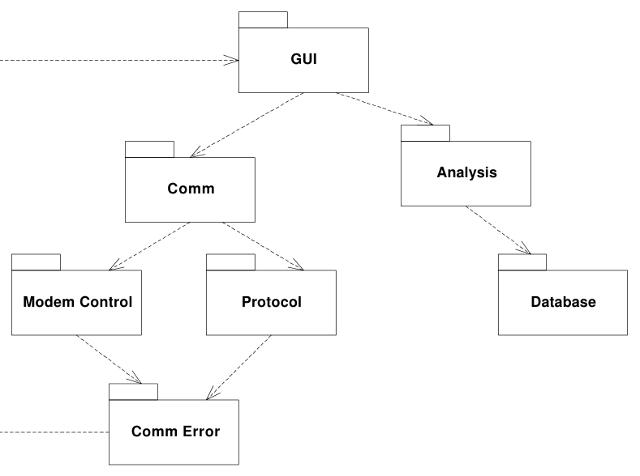

A Cycle Creeps In. But now lets say that I am an engineer working on the CommError package. I have decided that I need to display a message on the screen. Since the screen is controlled by the GUI, I send a message to one of the GUI objects to get my message up on the screen. This means that I have made CommError dependent upon GUI. See Figure 2-22.

A cycle has been added.
Now what happens when the guys who are working on Protocol want to release their package. They have to build their test suite with CommError, GUI, Comm, ModemControl, Analysis, and Database! This is clearly disastrous. The workload of the engineers has been increased by an abhorent amount, due to one single little dependency that got out of control.
This means that someone needs to be watching the package dependency structure with regularity, and breaking cycles wherever they appear. Otherwise the transitive dependencies between modules will cause every module to depend upon every other module.
Breaking a Cycle. Cycles can be broken in two ways. The first involves creating a new package, and the second makes use of the DIP and ISP.